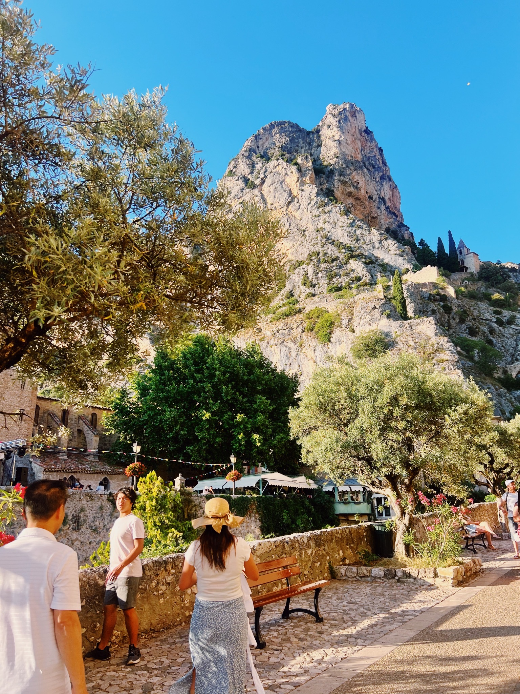
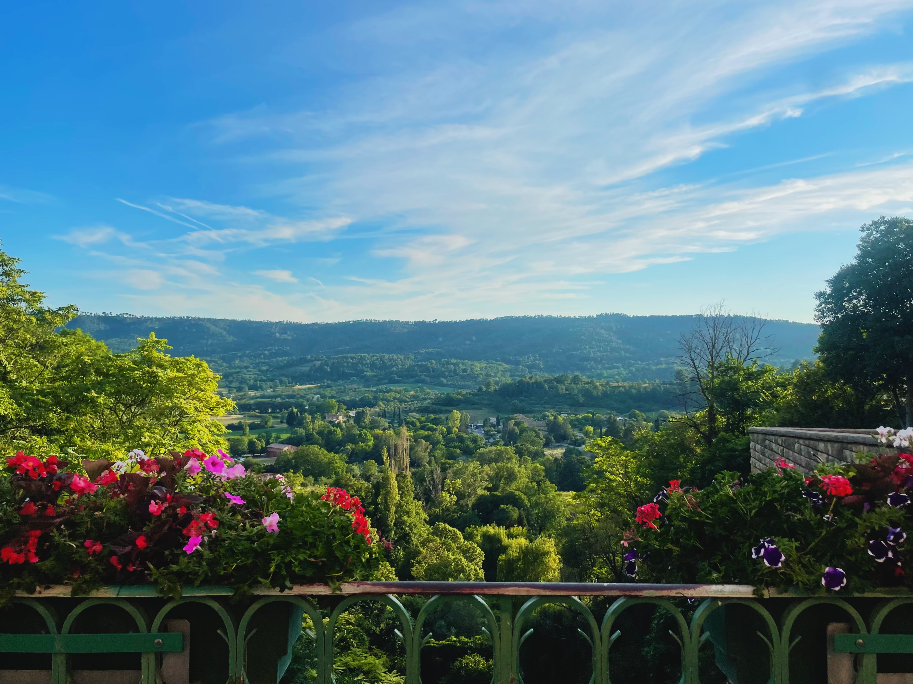

Moustiers-Sainte-Marie is officially one of France's "Plus Beaux Villages" (Most Beautiful Villages), and it wears that title proudly. The village clings to a cliff at the edge of Verdon Gorge, stone buildings cascading down the hillside, a waterfall tumbling through the center, and a legendary golden star suspended on a chain between two cliff faces. It's undeniably picturesque, aggressively charming, and fully committed to the tourist industry that designation brings.
This is a small village that knows exactly what it is—a postcard destination that sells ceramic pottery (its claim to fame for centuries), lavender products, and Provençal souvenirs to visitors who come for photos and lunch. It's touristy, yes, but the setting is genuinely spectacular. Come early before the tour buses arrive, visit in lavender season (late June-July) for purple fields, or use it as a base for exploring the nearby Verdon Gorge and Lac de Sainte-Croix. The village itself requires maybe two hours, but the surrounding area offers days of adventure.
Gallery


Where to Stay
In Moustiers: If you're using the village as a base for Verdon Gorge adventures, staying here makes sense. Small hotels and chambres d'hôtes (B&Bs) fill the village, most family-run and charming. Book well ahead—the village is tiny with limited rooms. Expect to hear the waterfall from your window.
Nearby alternatives: Riez (15 min), Valensole (20 min), or Manosque (30 min) offer more accommodation options at lower prices. You'll need a car regardless if you're exploring this area, so staying outside Moustiers isn't a disadvantage.
Splurge option: La Bastide de Moustiers, Alain Ducasse's country inn just outside the village, offers refined Provençal luxury with exceptional food. Expensive but memorable if you're celebrating something.
Where to Eat
For Provençal cuisine: Restaurants line the main street and small squares, most serving regional dishes—lamb, ratatouille, tapenade, goat cheese salads. Quality is generally decent though prices reflect the tourist traffic. La Treille Muscate and Les Santons de Moustiers have good reputations.
For lunch: Many places offer prix-fixe menus (set menus) that are better value than à la carte. Expect €20-30 for a two-course lunch with wine. The food won't blow your mind, but eating on a terrace overlooking the village and cliffs is part of the experience.
For lavender honey and local products: Small shops sell local honey, olive oil, lavender, and herbs. These make better purchases than the mass-produced tourist souvenirs. The Thursday morning market brings local producers if you're there on the right day.
For pottery: Moustiers has been famous for faïence (ceramic pottery) since the 17th century. Multiple workshops and shops sell everything from museum-quality pieces to tourist trinkets. Prices range wildly—know what you're looking at before buying.
What to Do
Explore the village. Moustiers is tiny—you can walk the entire place in 30 minutes. Wander the narrow streets, watch the waterfall cascade through the center, browse pottery shops, and look up at the famous star suspended between the cliffs (legend says a knight hung it there after returning from the Crusades). It's charming despite the tourist crowds.
Hike to Notre-Dame de Beauvoir chapel. A steep 20-minute climb up stone steps takes you to the small chapel overlooking the village. The views over Moustiers, the valley, and distant mountains are spectacular. Go early morning or late afternoon to avoid midday heat and crowds.
Visit the Musée de la Faïence. If you're interested in the village's pottery history, this small museum displays centuries of Moustiers ceramics. It's modest but well-curated. Skip it if museums aren't your thing—you'll see plenty of pottery in shop windows.
Explore Verdon Gorge. This is the real reason to visit this area. Europe's "Grand Canyon" is 25km of dramatic limestone gorges, turquoise river, and spectacular hiking/driving routes. The Route des Crêtes offers stunning viewpoints. Hiking down to the river is challenging but rewarding. Allow a full day minimum.
Lac de Sainte-Croix. This artificial lake at the entrance to Verdon Gorge is perfect for swimming, kayaking, and pedal boats. The water is bright turquoise (from limestone particles), shallow and warm in summer. Rent a kayak and paddle into the gorge entrance for dramatic cliff views. Very popular in summer—arrive early.
Lavender fields. Late June to late July brings purple lavender fields around Valensole plateau (20 min drive). It's stunning if you time it right, hopelessly touristy during peak bloom. The fields are on private property—respect signs and don't trample the crops for Instagram photos.
Sample Itinerary
Day trip: Morning arrival, explore the village and climb to Notre-Dame de Beauvoir chapel, lunch at a village restaurant, afternoon at Lac de Sainte-Croix for swimming or kayaking, return by evening.
Weekend stay: Day 1: Afternoon arrival, explore village, dinner with sunset views. Day 2: Full day exploring Verdon Gorge—drive Route des Crêtes, hike to viewpoints, kayak on the river or lake. Day 3: Morning visit to lavender fields (seasonal), final village stroll, departure by afternoon.
Verdon adventure base: Use Moustiers as a base for 3-4 days to fully explore Verdon Gorge hiking, rock climbing, kayaking, and surrounding villages. The area offers endless outdoor activities.
A Few of My Favorite Spots
- Notre-Dame de Beauvoir chapel hike
- Village pottery workshops
- Verdon Gorge exploring
- Lac de Sainte-Croix for swimming
- Lavender fields in late June-July
Practical Information
Getting there: You need a car. Moustiers is remote with no train station and limited bus service. Nearest major towns are Manosque (45 min), Aix-en-Provence (1.5 hours), or Nice (2 hours). The drive through Provence countryside is beautiful—factor in scenic stops.
When to visit: Late June-July for lavender (but expect huge crowds). May-June and September offer better weather-to-crowd ratios. Summer is hot and packed with tourists. October is pleasant but some businesses close. Winter is quiet but many hotels and restaurants shut completely.
Crowds: Tour buses invade 10am-4pm in summer. Visit early morning or evening for a more peaceful experience. The village is magical when empty but sardine-packed at midday.
What to buy: Authentic Moustiers pottery is beautiful but expensive. Look for pieces signed by local artisans if you're buying seriously. Lavender products, honey, and olive oil from local producers are better value than mass-produced souvenirs.
Outdoor activities: Verdon Gorge offers hiking, rock climbing, kayaking, and canyoning. Book guided activities through local operators if you're not experienced. The river and gorge require respect—people die here every year from poor preparation or taking risks.